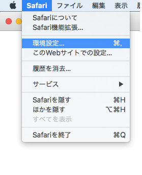
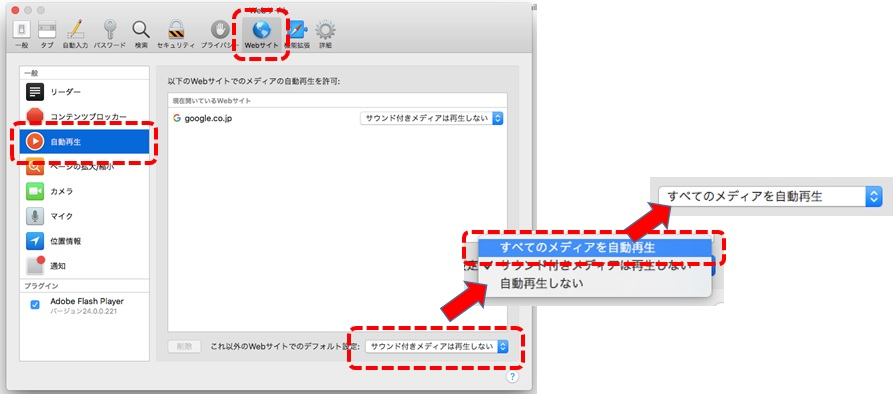

CASECサイトにアクセスする前に、Safariの「環境設定」の「自動再生」で、以下の設定に更新してください。

1.Safari11を起動して「Safari」
→「環境設定」をクリック。

2. 上部の「Webサイト」をクリック。
左側にある「自動再生」をクリックして、
右下の表示が「サウンド付きメディアは再生しない」 となっている場合は、
青い部分をクリックして、「すべてのメディアを自動再生」をクリック。
表示が「すべてのメディアを自動再生」になったことを確認。
以上の設定が完了したら、本ページ下部の【閉じる】をクリック。
受験環境チェックの画面を閉じ、改めて受験環境チェックを起動して、「CASEC音声再生確認」で音声出力を確認してください。